Lowk i fell asleep for 5 minutes near the start but the cinema was okay with that. I liked how the don talked softly since he doesn't need to yell and the christening scene in the church was actual peak.
Lowk i fell asleep for 5 minutes near the start but the cinema was okay with that. I liked how the don talked softly since he doesn't need to yell and the christening scene in the church was actual peak.
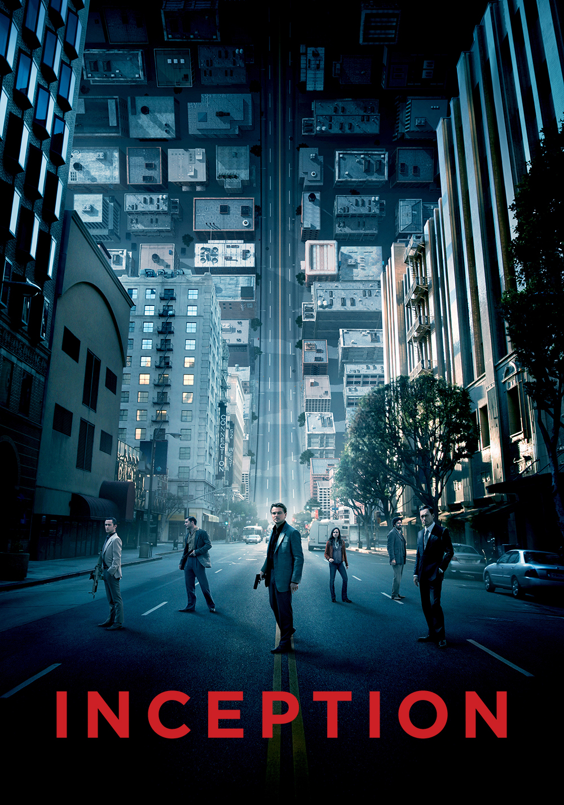
Nah sick movie innit though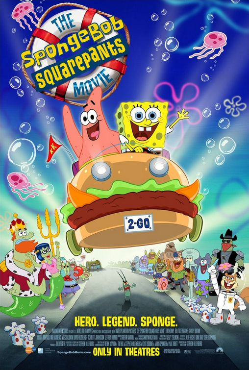
Wait... also a sick movie...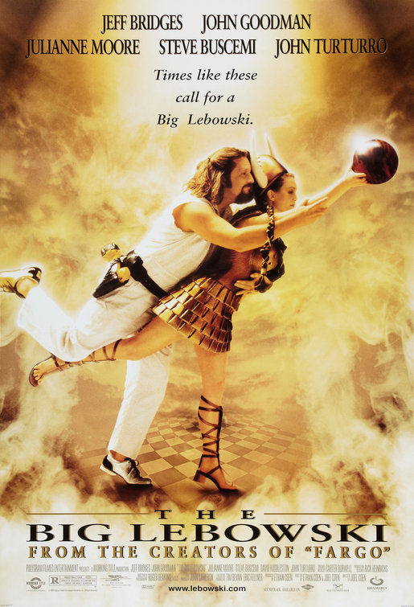
You arent gonna believe it but this is ALSO sick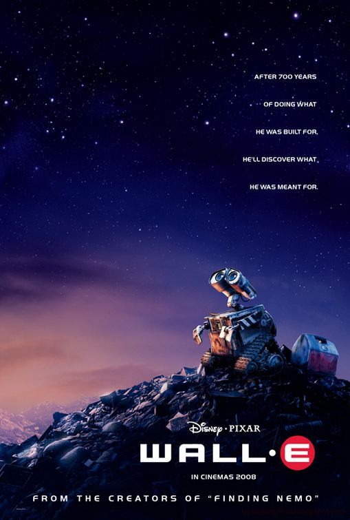
I was cooking with this as a 9 year old oh my god. Robot love story was actually beautiful. Im sami enough to admit i teared up at the end, it was just so sad like he didnt remember her after changing everyone he met for the better.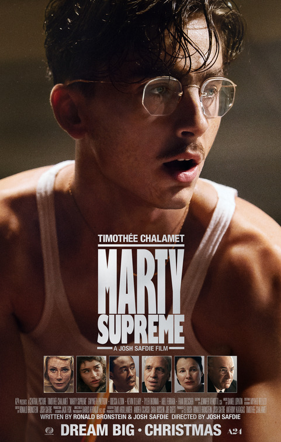
The first timmy chalamet and he's confimed white boy of the year. The dialogue in this movie was so good. I like how much of a dick marty is and in the end he accomplishes a meaningless dream. Getting strong whiplash vibes from this (Guy who's called sami)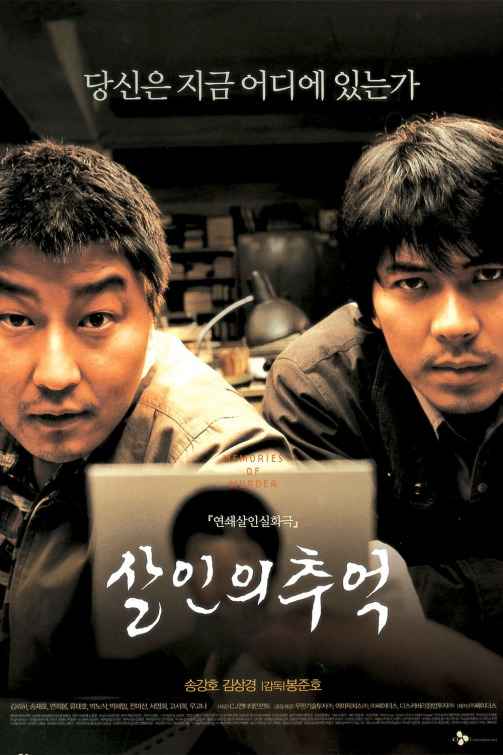
I'll be honest here i couldnt read that well. Everytime they said a new sentance i forgot the previous one which is bad for a mystery film. But the police wanting to catch the criminal to the point of faking suspects was cool. The ending got me thinking a lot too.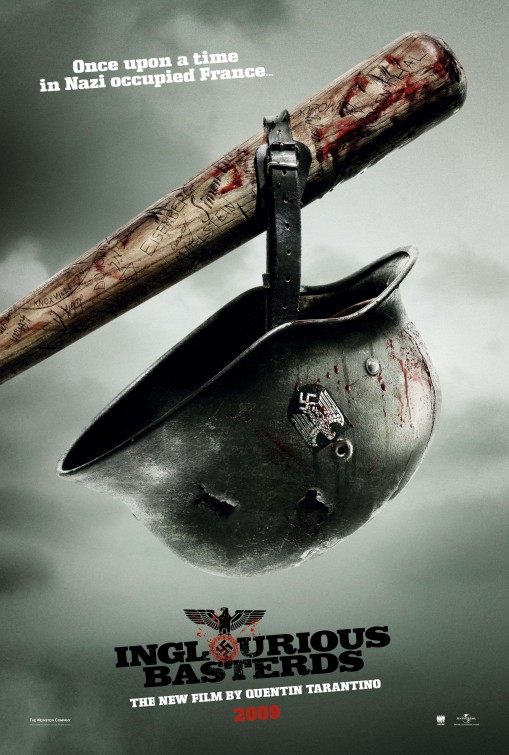
I'm not a big fan of war stuff in general so this was really weird. Like its a 4.5 movie if you love WW2 and stuff but thats not my vibe.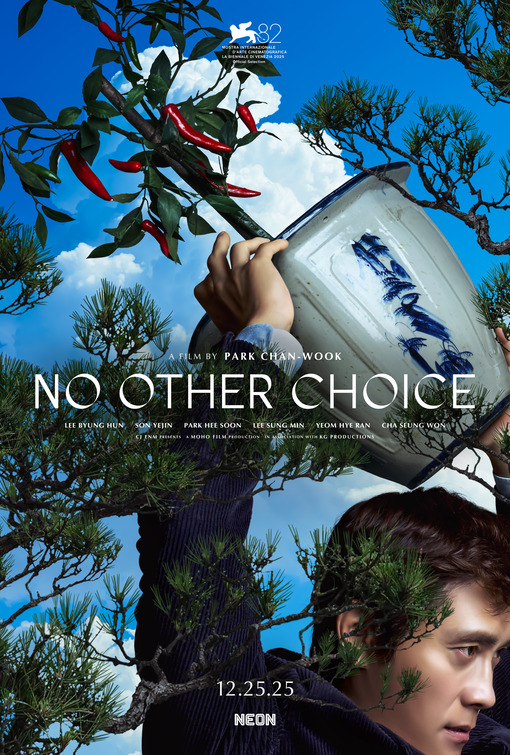
I didn't understand the point of the movie until halfway through but i liked it when it clicked. Having a guy murder multiple people just to get a job is a fun idea and W social commentary and in the end he gets the job but it doesn't have any of the parts he loved about it. The scene with the loud music was the best bit.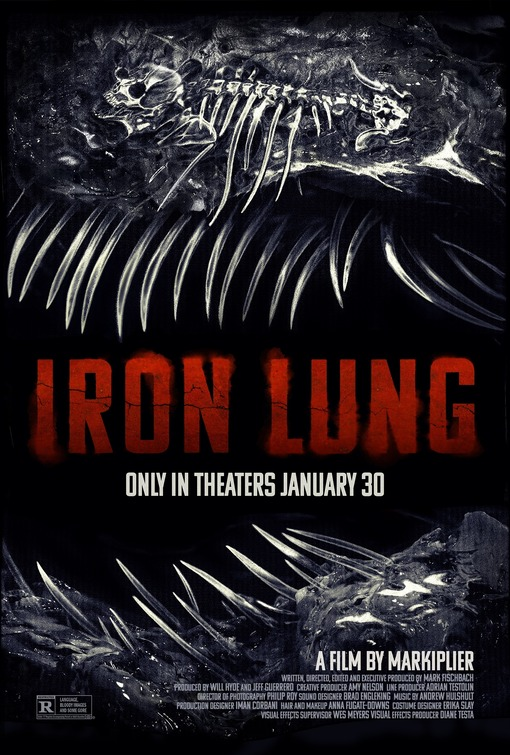
Mark what a movie icl. It felt a little long but his acting was actually mad i didnt know he had it in him. The scene where he hallucinates the blood ocean was so cool and kept the whole movie trapped in the submarine while still showing the blood ocean.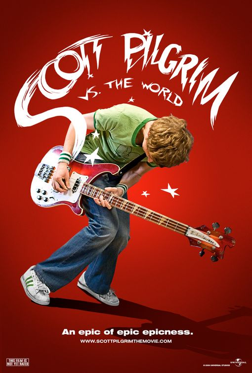
Scott is such a bum its not even funny. Like it made me realise you can be a bad bum. I like how the movie feels though its lowk a youtube short level of attention grabbing but i eat peanut butter with my hands and clap when i see colours i like so.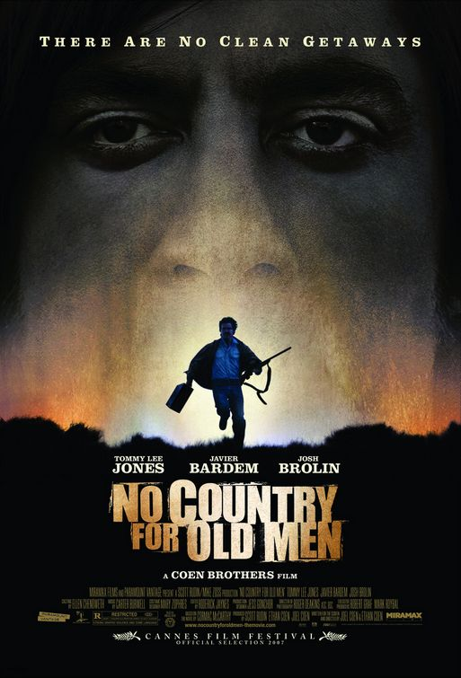
No subtitles in the cinema actually hurt this movie but I liked sugar alot he was a cool character, felt like a threat and a half that lad. Shout out Brian D
Lowk i fell asleep for 5 minutes near the start but the cinema was okay with that. I liked how the don talked softly since he doesn't need to yell and the christening scene in the church was actual peak.
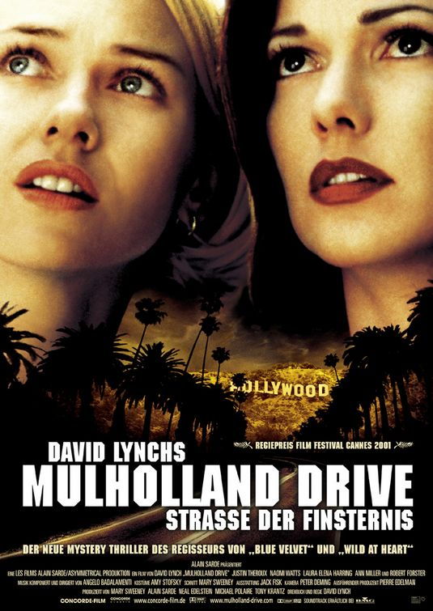
I feel like i'm more equipped for David Lynch's weirdness than regular robert but it was mad confusing but in a good way. Pandoras box was W knowledge good job **** ***** Would probably be 5 on rewatch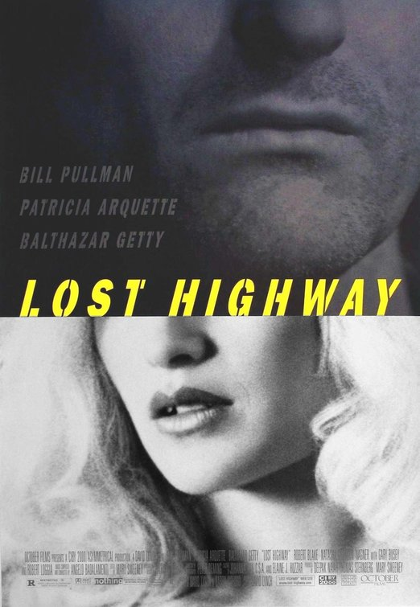
Genuenly the biggest fall off i've ever seen. The 2nd half was good but the dissapointment from it not being what the 1st half was setting up made me ponder. I feel like david won't top mulholland drive other than with twin peaks. Lorum Ispum
Lorum Ispum